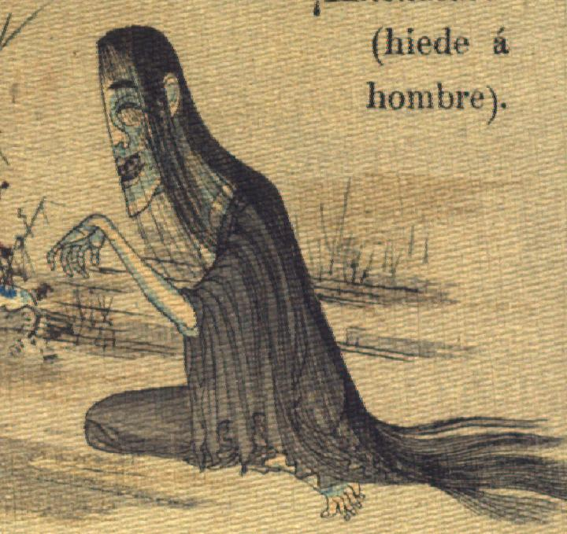

左半身だけの女の化物。頭部が大きく、腕脚は骨のように細い。肌は蒼白い。髪を腰の下まで長くたらし、目はたれ下がり、耳は大きい。大きな口を開いている。くすんだ黒っぽい色の着物を身にまとっている。床に座り、手首を曲げて左腕を上げている。
著作者：Gonzalo J.de la Espada／出典：親書誌：U426_nichibunken_0114：La araña duende／日付：2006／資源識別子：U426_nichibunken_0114_0002_0000
Copyright (c)2010- International Research Center for Japanese Studies, Kyoto, Japan. All rights reserved.